Index
Here we get in to the lower level aspects of Resize and Distortion
of images, looking at the resampling filters that is used to determine
the final color of each individual pixel in the resulting image.
This is extensive, long studied, and often full of opinion and personal
views rather than any hard qualitive facts, as it is imposible to determine
what constitutes a perfect resize image. This is a proven fact, and makes for
a very large area of study that will never be finished.
It is recommended you read and understand the
Resize and
Scaling Operators.
Resampling Artefacts
- How good is IM Resize
Image resizing has to combat a very difficult problem. How do you reduce an
array of values, into a smaller, or larger array of values so that it look
good to our eyes. A lot of things can go wrong while attempting to do this,
but they fall into four basic categories..
Blocking
Essentially, if you enlarge an image simply by replicating pixels, you will
create larger rectangular blocks of pixels. In fact magnifying images using
either "
-scale" or
"
-sample" does exactly
that, producing an enlarged pixelated image.
For example here I scale a small image, generating large blocks of color
rather that a nice smooth image. Next to that is a 'resized' version, and
finally one using a Gaussian filter to blur it more than normal and replace
isolated pixels with round dots, to remove some of the blockiness.
convert storm.gif -scale 300% storm_scaled.gif
convert storm.gif -resize 300% storm_resized.gif
convert storm.gif -filter Gaussian -resize 300% storm_resized_gas.gif
|
![[IM Output]](../images/storm.gif)
Original
|

|
![[IM Output]](storm_scaled.gif)
Scaled
|
Resized
|
![[IM Output]](storm_resized_gas.gif)
Gaussian Resized
|
The primary cause of 'blocking' is either badly anti-aliased source image, or
not enough smoothing (color mixing or blurring) between pixels to improve the
overall look of an image.
It is also typically seen when a very low resolution image is being resized to
a much larger scale or for use on a high resolution device. The most common
place this is seen is in the use of a bitmap image in user generated
newsletters and magazines that were then printed on very high resolution laser
printers. The newsletter looks great on screen, but comes out 'blocky' on the
printed page.
This situation is very hard to fix, and generally best avoided, by using a
much higher resolution clipart, or using a scalable vector image (such as
SVG, and WMF format images).
Of course in some situations, blocking artifacts is actually desirable, and
enhanced in the results. For example when you are trying to recreate some old
low-resolution video games on newer high resolution displays, keeping the old
'blockiness' of the image enhances the 'retro' look. Or perhaps when you are
trying to rotate images, without generating and new, or merged colors.
Techniques for actually preserving the 'blockiness', but filling in the
squares with diagonal lines, is known as
Pixel Art
Scaling Algorithms, and many such schemes have been developed. On scheme
has been built into ImageMagick, with the
Magnify operator.
Ringing
Ringing is an effect you often see in very low quality JPEG images
close to sharp edges. It is typically caused by an edge being
over compensated for by the resize or image compression algorithm, or a
high quality filter being used with a bad support size.
Here for example I use a special option to select a raw Sinc filter, on
an very sharp color change. I also repeated the operation using IM's
default resize operator, with its default filter selection for image
enlargements.
convert -size 8x16 xc:'#444' xc:'#AAA' +append gray_edge.gif
convert gray_edge.gif -filter Sinc \
-resize 100x100\! gray_edge_ringing.gif
convert gray_edge.gif -resize 100x100\! gray_edge_resize.gif
|
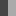
![[IM Output]](gray_edge_ringing.gif)
![[IM Output]](gray_edge_resize.gif)
The above shows quite clearly the over compensation produced by the use of
a raw resize filter, without any of the optimization IM provides. The
second image, produced by the default IM enlargement filter also shows a
very slight ringing effect, but it is barely noticeable, and actually
desirable in that it perceptually sharpens the border.
Here is another example of the ringing effect, this time by enlarging a
single pixel, on a gray background.
convert -size 1x1 xc: -bordercolor '#444' -border 4x4 \
-define filter:lobes=5 -filter Sinc \
-resize 100x100\! dot_sinc.gif
| |
![[IM Output]](dot_sinc.gif)
|
This image also clearly shows the secondary effects generated by the use
of an one dimensional filter. That is, the ringing effect is strongest in
horizontal, and vertical (orthogonal) direction, with 45 degree secondary
ringing.
And this time with a cylindrical filter (via the
Distort Resize Operation), showing how it differs from the more normal
2 pass orthogonally aligned (tensor) filter which the
Resize Operator uses.
convert -size 1x1 xc: -bordercolor '#444' -border 4x4 \
-define filter:lobes=5 -filter Jinc \
-distort resize 100x100\! +repage dot_jinc.gif
| |
![[IM Output]](dot_jinc.gif)
|
These effects are not normally visible, and only seen here because of the use
of the use of a raw '
Sinc' or '
Jinc' filter (see
Windowed Filters below) for some extreme enlargements.
Typically a 'raw' filter like this is not used.
Aliasing and Moiré Effects
Aliasing effects are generally seen as the production of 'staircase' like
effects along edges of images. Often this is caused either by raw sampling of
the image such as using "
-sample", or overly sharpening of the image during resizing. A
staircasing effect is most noticeable in strong minification of images, though
is rarely seen in IM.
However, aliasing also has other effects, in particular large scale
Moiré patterns appearing in images containing some type of pixel level
pattern. These low level patterns often produce large scale Moiré
patterns, including: patterns of parallel lines, cloth weaves (silk exhibits
this effect in real life!), as well as brick and tile patterns in photos of
brick buildings, fences, and paving.
![[IM Output]](../img_photos/rings_sm_orig.gif)
For some examples of resized images producing strong Moiré effects see
the
Wikipedia,
Moiré Pattern Page.
The classic way of checking if a resize will produce aliasing problems, is by
minifying a
Rings Image (see right). This
image will often show Moiré effects when any form of resize is applied
at any scale. Web browsers in particular show such Moiré effects when
displaying such an image due to the use of an ultra fast (but often poor)
resizing technique.
Here I show the 'rings' image resized using the strongly aliasing "
-sample" operator, the block
averaging "
-scale"
operator and the normal default "
-resize".
convert rings_sm_orig.gif -sample 100x100 rings_sample.png
convert rings_sm_orig.gif -scale 100x100 rings_scale.png
convert rings_sm_orig.gif -resize 100x100 rings_resize.png
|
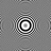
sample
|
![[IM Output]](rings_scale.png)
scale
|
![[IM Output]](rings_resize.png)
resize
|
As you can see all the resize methods did produce some Moiré
effects, though IM's default resize operator produces the least amount of
this undesirable secondary patterns in the final image.
To show the effects of only a slight resize, I cropped the corner from the
Large Rings Image, the result of which is
shown first, and then reduced its size by just 5%.
convert rings_lg_orig.png -crop 105x105+0+0 rings_crop.png
convert rings_crop.png -sample 100x100 rings_crop_sample.png
convert rings_crop.png -scale 100x100 rings_crop_scale.png
convert rings_crop.png -resize 100x100 rings_crop_resize.png
|
![[IM Output]](rings_crop.png)
cropped original
|
|
![[IM Output]](rings_crop_sample.png)
sample
|
![[IM Output]](rings_crop_scale.png)
scale
|
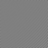
resize
|
As you can see even a slight resize will show up any aliasing a resize
operator may have. In fact if you look closely you may even seen a very light
Moiré effect in the original unscaled crop of the original starting
image, which is produced from the limitations of only using a raster image at
a density suitable for display on a computer screen. That is how sensitive
this test image is in showing aliasing effects caused by shrinking images.
Blurring
Most people are familiar with blurring that can be generated by the use of
"
-resize". In fact
this is probably the number one complaint about any resize image, and with
good reason. Usually a very small resize will tend to produce a blurred
image, and resizing it again will only make it worse.
The problem is that when you resize an image you are changing the image stored
as a 'grid' or array of pixels (known as a 'raster') to fit a completely
different 'grid' of pixels. The two 'grids' will not match except in very
special cases, and as a result, the image data has to be modified to make it
fit this new pattern of dots. Basically it is impossible to directly resize
an image and expect it to come out nicely, though a reasonable result can be
achieved.
The result is an usually a slight blurring of the pixel data. The better
the resize algorithm, the less blurring of sharp edges there is.
However some resize filters, especially ones designed specifically for
enlarging images, often add a lot more blurring than necessary. This is to
combat '
Blocking' artifacts as demonstrated above.
For image minification a blurred edge is often used to avoid '
Ringing' artifacts at sharp edges and reduce possible
Aliasing effects. This however is a poor man's
compromise and one that IM tries hard to avoid.
Even so, a special expert
Filter Blur
setting can be used to adjust the blurring that a filter provides. However be
warned that while a number smaller than 1.0 is supposed to reduce blurring, it
can also make it worse, depending on the exact filter and the resize ratios
that are being used. No guarantees can be given.
  |
Before IM v6.3.6-3 the Filter Blur
setting was called "-support", which was very misleading in exactly what it did.
This option has been depreciated and is no longer available.
|
The better method of fixing bluring effects cause by resize is to re-filter
the image using a sharpening operator. See
Sharpen Resized Images for more
details.
IM Resize vs other Programs
A practical comparison of IM's default resize operator to a number of other
programs in resizing a real-world image has been provided by, Bart van der
Wolf at...
Specifically, in summary for IM resize...
Although the amount of sharpening is a matter of taste, the
lack of aliasing artifacts produces the cleanest, most natural looking image
of them all.
He also goes on to look at a 'rings' test, to directly compare various
Photoshop resize methods against ImageMagick...
These articles shows just how important doing resize correctly (and using the
right filtering methods) is to image processing. We look this at more closely
in the next section.
Resampling Filters
The "
-filter" setting is
the key control on how "
Image
Resizing" as well as "
General
Distort Operator", works to produce a clean result with the minimum
of
Resampling Artefacts.
This has been a topic of intense study during the late 1980's, and from which
Paul Heckbert, a major researcher in
this field, produced and publicly released his "
zoom" image resizing program. This program became the
father of most image resizing programs used today, though many later programs
implement it poorly, as it is easy to get it wrong. For example have a look at
the results of testing
How web browsers
resize images.
In many ways, these filters are closely related to
Convolving Images, and even the
Blurring Kernel. They even suffer from the
similar problems. However filters are designed to improve the look of the
final result when resizing, or otherwise distorting an image.
The names of the filters are a veritable "who's who" of image processing
experts and mathematicians of the past century (or more). They are usually not
a description of the filter, but just a label of the person who either first
published the filter (or filter family), or did the most research into that
filter. This however makes it much harder to know whether
a '
Lagrange' filter (named after Joseph-Louis Lagrange) is better
than, say, a '
Catrom' filter (named after Edwin Catmull and
Raphael Rom).
Here I will explain the major aspects of Filters. It is not vital that you
learn these things, but I decided to document a summary of what I learnt,
after completing research in this area, as part of a major overhaul and
expansion of the IM resize filter system, (IM 6.3.7-1).
Special thanks goes to
Fred Weinhaus for his help in the research during the re-development of
the Resize Filters. He was especially eager for the addition of the '
Lagrange' family of filters, which did not exist
in IM resize before this overhaul.
Also thanks goes to
Nicolas
Robidoux, who's mathematics helped solve a major fault in the
General Distort Operator, and then develop
Cylindrical Filters, that produce better
results that what you get with the
Resize Operator.
How filters work
When resizing an image you are basically trying to determine the correct value
of each pixel in the new image, based on the pixels in the original source
image. However these new pixels do not match exactly to the positions of the
old pixels, and so a correct value for these pixels needs to be determined
in some way.
What is done is to try to use some type of weighted average of the original
source pixel values to determine a good value for the new pixel.
The real pixels surrounding the location of the new pixel forms
a 'neighbourhood' of contributing values. The larger this neighbourhood is
the slower the resize. This is a technique called
Convolution.
The amount each real neighbouring pixel (known as a 'sample') contributes to
produce the final pixel is determined by a weighting function. This is the
'
filter' that you can select using the "
-filter" setting. That filter in
turn generally has an ideal neighbourhood size, which is known as the filter's
'
support', though it is also known as its '
window'. A
pre-defined two dimensional '
filter' is also known as a '
convolution
kernel'.
FUTURE: some diagrams may be helpful here
The design of these weighting functions, or 'filters' is a very complex
business involving some complex mathematics, frequency analysis, and even
Fourier Transforms. A good starting point if you are interested in this is
Wikipedia: Nyquist–Shannon sampling theorem. However, you really don't
need to go that far to understand existing filters and their effects on
images.
The Filters
Interpolated Filters
The simplest type of resize filter functions are
Interpolative methods.
These take a specific pixel location in the source image and try to simply
determine a logical color value of the image at that location based on
the colors of the surrounding pixels.
As there is only ever a fixed and minimal number of pixels involved, this type
of filter is a very fast method of resizing or otherwise distorting images.
However, this is also the filter's downfall, as it will not merge a larger
number of pixels together to form an image that is greatly smaller than the
original image. That in turn can result in strong
Aliasing and Moiré Effects.
Interpolation is usually only used for 'point' sampling images, when image
scaling is either not known or needed. For example, when rotating image or
minor distortions, the image's scaling or size does not change, and as such an
interpolation can produce a reasonable result, though not a very accurate one.
For more information see IM's
Interpolation
Setting.
It is not however suitable for general image resizing.
Point
Using a "
-filter"
setting of '
Point' basically means to use an unscaled
interpolation filter. For the
Resize
Operator, it will just select the closest pixel to the new pixels
position, and that is all.
This means that the
Resize Operator will
simply use the color of an actual pixel in the source image will be used. No
attempt will be made to merge colors or generate a better color for the
resulting image. As a result using
"-filter point -resize
..." will produce the same result as "
-sample" (see
Sampling Operator), though the latter is
faster as it code is specifically designed to resizing images by point
sampling, with controls to tune the exact sampling point.
Here I start with a 10x10 pixel hash pattern and reduce it in size, before
scaling so that you can see the result.
convert -size 10x10 pattern:gray50 checks_10.gif
convert checks_10.gif -filter point -resize 9x9 checks_point-1.gif
convert checks_10.gif -filter point -resize 8x8 checks_point-2.gif
convert checks_10.gif -filter point -resize 7x7 checks_point-3.gif
convert checks_10.gif -filter point -resize 6x6 checks_point-4.gif
convert checks_10.gif -filter point -resize 5x5 checks_point-5.gif
|
|
|
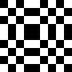
Point-1
|
![[IM Output]](checks_point-2_mag.gif)
Point-2
|
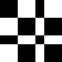
Point-3
|
![[IM Output]](checks_point-4_mag.gif)
Point-4
|
![[IM Output]](checks_point-5_mag.gif)
Point 50%
|
All that is really happening is that single rows and columns of pixels are
removed across the image. Even at this level, you will get extreme
blocking and
aliasing in the
resulting image, and can in specific cases like the above produce a completely
unrealistic result.
As such, a '
Point' filter, or the faster equivelent
Sampling Operator, is not recommended for normal image
resizing.
Box
The '
Box' filter setting is exactly the same as
'
point' with one slight variation. When shrinking images it will
average, and merge the pixels together. The smaller the resulting image the
more pixels will be averaged together.
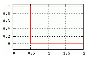
Here is a graph of the filter's weighting function, from which you can see why
it is called a '
Box' filter.
Basically any pixel that falls inside the 'Box' will be directly used to
calculate the color of the new pixel. Now as the filter is only 1/2 a pixel
wide, and that means for an image that is not actually being resized, only one
pixel the closest pixel, will be used. In other words when no scaling is
involved (or only magnification) the nearest pixel to the new location will
form the color of the new pixel.
However if an image is being made smaller, more of the source image will be
compressed into the bounds of that 'box'. The result is that more pixels will
be averaged together to produce the color for the pixel in the smaller image.
For example here is an enlarged view of a checkerboard pixel pattern
as it is being slowly compressed using a '
Box' filter.
convert checks_10.gif -filter box -resize 9x9 checks_box-1.gif
convert checks_10.gif -filter box -resize 8x8 checks_box-2.gif
convert checks_10.gif -filter box -resize 7x7 checks_box-3.gif
convert checks_10.gif -filter box -resize 6x6 checks_box-4.gif
convert checks_10.gif -filter box -resize 5x5 checks_box-5.gif
|
|
|
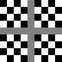
Box-1
|
![[IM Output]](checks_box-2_mag.gif)
Box-2
|
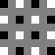
Box-3
|
![[IM Output]](checks_box-4_mag.gif)
Box-4
|
![[IM Output]](checks_box-5_mag.gif)
Box 50%
|
As you can see, more and more pixels become merged together as the image is
resized smaller using a '
Box' filter, but that the merger occurs
in specific, equally spaced, rows and columns. This causes all sorts of
artifacts and Moiré or
Aliasing effects when
both shrinking images and enlarging.
It is recommended that '
Box' filtering be used for 'binning'
images. That is, reducing images by integer multiples to ensure that every
pixel in the result is an average of the same number of neighbouring pixels
(the 'bin'). The resulting image will thus remain clean looking, just as in
the final image above.
It is also recommended that much faster the
Scale
Operator is used instead of the 'Box Filter'. It will produce almost
identical results, except in a special case of reducing images by just a few
pixels. When 'binning' it will produce identical results.
 |
The Scale Operator is not exactly the same
as a 'Box Filter', as it is implemented using a special 'Pixel Mixing'
algorithm. For exact details see Scale
Internals.
|
When enlarging both '
Point' and '
Box' filters will
produce the same 'pixel replication' of rows and columns, as they all result
in using a simple 'nearest-neighbour' selection.
convert -size 5x5 pattern:gray50 checks_5.gif
convert checks_5.gif -filter box -resize 6x6 checks_box+1.gif
convert checks_5.gif -filter box -resize 7x7 checks_box+2.gif
convert checks_5.gif -filter box -resize 8x8 checks_box+3.gif
convert checks_5.gif -filter box -resize 9x9 checks_box+4.gif
convert checks_5.gif -filter box -resize 10x10 checks_box+5.gif
|
![[IM Output]](checks_5_mag.gif)
|
|
Box+1
|
![[IM Output]](checks_box+2_mag.gif)
Box+2
|
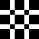
Box+3
|
![[IM Output]](checks_box+4_mag.gif)
Box+4
|
![[IM Output]](checks_box+5_mag.gif)
Box+5
|
|
The Scale Operator also produces similar
results, but with some pixel color mixing, when enlarging, unless enlarging
by an integer scaling factor.
|
Triangle
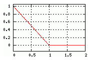
The '
Triangle' or '
Bilinear' interpolation filter just takes the interpolation of the
nearest neighbourhood one step further. Instead of just directly averaging
the nearby pixels together, as '
Box' does, it weights them
according to how close the new pixels position is to the the original pixels
within the neighbourhood (or '
support' region). The closer the new
pixel is to a source image pixel, the more color that pixel contributes.
This produces a more global averaging of colors when images are being reduced
in size.
convert checks_10.gif -filter triangle -resize 9x9 checks_tri-1.gif
convert checks_10.gif -filter triangle -resize 8x8 checks_tri-2.gif
convert checks_10.gif -filter triangle -resize 7x7 checks_tri-3.gif
convert checks_10.gif -filter triangle -resize 6x6 checks_tri-4.gif
convert checks_10.gif -filter triangle -resize 5x5 checks_tri-5.gif
|
As you can see as the corner pixels were near perfect matches to the corners
of the original image they are more visible, but toward the middle where none
of the nearby pixels exactly match up with the new pixel being generated, you
get a more average color of the whole neighbourhood.
The result for the checkerboard pixel pattern is a tendancy to fade in and out
of an average gray color.
However as the '
support neighbourhood is larger, more pixels will be
involved when you enlarge the image. Thus producing averaging of colors when
generating the pixels being added to the image.
convert checks_5.gif -filter triangle -resize 6x6 checks_tri+1.gif
convert checks_5.gif -filter triangle -resize 7x7 checks_tri+2.gif
convert checks_5.gif -filter triangle -resize 8x8 checks_tri+3.gif
convert checks_5.gif -filter triangle -resize 9x9 checks_tri+4.gif
convert checks_5.gif -filter triangle -resize 10x10 checks_tri+5.gif
|
For large scale enlargements the result acts as if a gradient of colors
was added between each and every pixel. For example, here I generate a
very small image with a single white pixel (the display is an enlarged view).
I then enlarge that image enormously.
convert xc: -bordercolor black -border 2x0 pixel_5.gif
convert pixel_5.gif -filter triangle -resize 300x pixel_triangle.gif
|
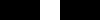
Single Pixel Image
(magnified)
|
|
![[IM Output]](pixel_triangle.gif)
Triangle Filter Enlarged
|
If you were to graph the colors in the above image (using the "
im_profile" script), you will see a
replica of the triangular filter graph.
![[IM Profile]](plot_triangle.gif)
Profile of Image
As you can see the central pixel was merged with the neighbouring pixels to
produce a linear gradient of colors between those points.
All the interpolation filters, produce similar gradient patterns between
neighbouring pixels and is also the reason why they are so well suited to
image enlargements.
Other Interpolation Filters
![[IM Output]](graph_interpolation.gif)
To the right I have graphed the various interpolation filters, except for
'
Point' which is actually very special case of an unscaled
'
Box' filter (a pure '
NearestNeighbor' interpolation).
Other interpolation filters include '
Hermite' which is
very similar to triangle in results, but producing a smoother round off for
enlargements, that smooths gradient transitions. Click on the
graph on the right to see a graph
of these three filter functions.
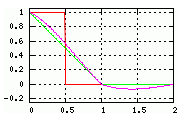
The '
Lagrange' filter has been called a 'universal'
interpolation filter. By varying the 'support' size (See the
Support Expert Setting below), it can generate
all the previously looked at interpolation filters (except
'
Hermite').
The default settings (a Lagrange order 3 filter (support=2.0) as shown as the
purple line on the graph right) provides a reasonable 'cubic' filter. It
works very well though the gradient change can result in some noticeable
blocking effects on enlargement, though with bitmap
images and line drawings this can be a good thing.
More on the other
Lagrange Filter orders later.
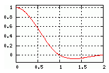
The '
Catrom' (Catmull-Rom) filter is a well known standard
Cubic Filter often used as an interpolation function, and
is available under the same name. This filter produces a reasonably sharp
edge, but without a the pronounced gradient change on large scale image
enlargements that a '
Lagrange' filter can produce.
It is basically equivelent to a built-in 'unsharp resize' (see
Sharpened Resized Images), though some consider it
far too sharp, and does not provide any control of the sharpening.
What does make a '
Catrom' filter more interesting is that it is
almost an identical cubic equivelent of a 2-lobe '
Lanczos' filter, which is probably the most commonly used
Windowed-Sinc Filter (see below).
We will also look at this filter more closely later in
Cubic Filters.
Interpolation and IM's Interpolate Setting
The
Interpolate setting of IM which is
used to produce an unscaled 'point' lookup of images in operators like the
FX DIY Operator ("
-fx") and
Color Lookup Replacement Operator ("
-clut"), and some older
Circular Distortion functions are based on
these simple interpolation resize filters. However they are currently
implemented using separate code and also have different setting names.
These
Interpolation Settings include:
'
NearestNeighbor',
implementing the '
Point' (or unscaled '
Box') filter,
and '
BiLinear' to get an
unscaled '
Triangle' filter.
ASIDE: At this time the smoothed triangle filter 'Hermite' has
not been directly implemented as an Interpolation Setting, which is a shame as it is quite a good
interpolation filter.
Gaussian Blurring Filters
In the complex mathematics of Fourier Transforms into frequency domains,
resize filters are meant to remove any high frequency noise that may be
present. This noise is caused by the sampling of a real world image into
pixels, and when you resize an image, that noise appears as aliasing and
Moiré effects.
Because of this the Gaussian Bell Curve became a natural early candidate as a
resizing or resample filter, as it is the ideal model for real world effects.
Gaussian
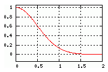
The
Gaussian filter is a very special filter that generates that same
'bell curve' shape in the frequency domain. This makes it very useful as an
image filter as it guarantees a good removal of this high frequency noise in a
highly controllable way.
However if you examine the filter graph, you will see that at a distance of
one pixel from the sampling point, you have a non-zero value. In fact it is
quite a high value indeed. This results in a huge amount of blurring of the
individual pixels, even when no resize is actually performed.
For example here I have resized the standard IM logo using a Gaussian filter
and again using the normal IM filter ('
Lanczos' in this case,
which we will look at later)
convert logo: -filter Gaussian -resize 150x logo_gaussian.png
convert logo: -resize 150x logo_normal.png
|
|
|
![[IM Output]](logo_gaussian.png)
Gaussian
|
Normal Resize
|
If you look closely you will see that the left '
Gaussian'
filtered image is more blurry than the normal resize. Especially with regard
to the detail of the smaller stars around the wand and on the wizard's hat.
This blurring of the image is the trade off you get for removing all the
aliasing effects in image reduction, as well as all
blocking effects on image enlargement. It will also,
never produce any
ringing effects (when applied
perfectly). But all that is at the cost of extreme
blurring for the resulting image.
In fact, during large scale enlargements, this filter will generate round
dots, rather than square looking dots. For example, here I greatly enlarge a
3x3 pixel image with a single dot in the center.
convert xc:red -bordercolor yellow -border 1 \
-filter Gaussian -resize 99x99 -normalize dot_gaussian.jpg
| |
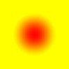
|
As you can see a single pixel enlarges into perfectly circular dot. Only
Gaussian and Gaussian-like filters will do this.
Gaussian Sigma Expert Control
You can control the Gaussian Filter directly using an a special
expert option "
-define
filter:sigma={value}" to specify the actual 'sigma' value of the
Gaussian curve.
By default this value is '
0.5' which is also the same size as the
Box Filter. In many ways you can regard a Gaussian Filter
as essentially a 'blurred box'.
This expert option was added to allow for the creation of very very small
Gaussian Blurs, without reducing the
Filter's
Support range (see below).
However increasing the 'sigma' could cause the filter to become clipped. As
such when increasing the 'sigma' value the default 'support'
(
2.0) is also increased by a similar amount. This only happens
on increases in the default 'sigma' value. The
Support
Expert Setting can be used to override this automatic effect, but it is
typically not necessary.
 |
The 'filter:sigma' expert option only works for the Gaussian Filter. No other filters are effected by
this expert control.
A more generalised control, for other filters can be achievd using Blur Filter Expert Control which we will look at
later.
|
Other Gaussian-like Filters
![[IM Output]](graph_gaussian.gif)
If you study the comparative graphs to the right you will see that
'
Quadratic' filter as well as the slightly more complex
'
Spline' filter follow the weighting curve of the
'
Gaussian' filter quite well. And being polynomial functions they
are also a lot faster to calculate, which was why they were originally
invented.
While '
Quadratic' is very slightly more blurry than the
Gaussian Filter, the '
Spline' filter is
even more blurry, with an equivelent
Sigma
setting of approximatally '
0.65'. This makes
a '
Spline' filter the most blurry filter provided without
modifications.
Examining the graphs you will see that like the
Gaussian
Filter and unlike
Interpolation Filters
they have a non-zero value at a distance of 1.0 from the sampling point. This
causes the nearby pixels to merge their colors, and is the cause of the
blurring you see. The '
Spline' filter having the highest value at
the 1.0 distance producing the largest amount of blurring in any resized (or
distorted) image.
This extra blurriness removes the last of any 'blocking' effects that may be
present in large scale enlargements. And could be used with a
Sharpen Resized Images technique to
enlarge line drawing with very little 'staircase effects' in the results.
The '
Mitchell' filter is also
shown in the comparison graph. This filter also has a some blurring at the
1.0 distance from the sampling point, which also makes this filter slightly
blurry, much like the other filters we have seen. However it also has some
negative weighting in its curve, which while producing
ringing effects (see
Window Sinc Filters
later), offsets that bluriness near sharp edges.
Filter Support Expert Control
The Gaussian filter is known as an IIR (Infinite Impulse Response) filter,
which simply means that the response 'curve' it uses never reaches zero. That
is, no matter how far away from the sampling point you get, you will still
have some non-zero contribution to the result from very distant pixels.
In mathematical terms this is actually a good thing, as it means the result is
much more mathematically perfect. In practical application it is very bad, as
an infinite filter requires you to use a weighted average of every pixel in the
original image, to generate each and every new pixel in the destination image.
That means that large images would take a very very long time to resize
perfectly using this filter.
However for the '
Gaussian' filter anything beyond a range of
about 2 pixels (4 times its default 'sigma' setting) from the sampling point
will generally produce very little effect in terms of the final result, and as
such can be generally be ignored. Even 3 times the sigma is generally regarded
as reasonable. This range is known as the filter's '
support window' and
is the program's practical limit for the filter.
If you really want, you can change the 'support' of a filter using the special
expert setting "
-define
filter:support={value}".
For example here I resize an image with a single pixel using the smaller
support value of 1.25, or 2-1/2 times the sigma value.(see the resulting graph right). This is of
course smaller that the normal generally accepted minimum of 3 times the sigma
value.
convert pattern:gray5 -crop 5x1+0+3 +repage pixel_5.gif
convert pixel_5.gif -filter gaussian -define filter:support=1.25 \
-resize 300x pixel_gaussian.png
|
|
![[IM Output]](graph_gaussian_support.gif)
|
By using the smaller '
support' setting, the 'step' (where the
support window cuts off the function) was moved to the 1.25 position. That in
turn, results in a larger 'stop' in the filter's profile, and results in an
'aliasing' effects that you can see in the enlargement. That is the wiggle
near the 'peak' of the graph, as well as a sudden 'drop' at the edges of the
filter's 'support' limits.
You can think of 'support' as being a sliding 'window' across the pixels being
averaged together to produce the enlarged image result. As the support size is
1.25, the filter's total support area is 2.5 pixels wide (unscaled during
image enlargements), as such you can have either 2 or 3 pixels involved in the
horizontal resizing phase.
As this support 'window' slides across the image, each pixel entering or
leaving will generate the sudden 'change' in the filters 'curve'. That is the
cause of the slight jiggles in the results. That is, at these points, a pixel
is being added or removed from the total number of pixels being averaged
together according to the filter weighting curve.
This in turn produces four such 'jiggles' or 'zig-zags' in the resized image,
An initial two on the outside edges when the single white pixel enters/leaves
the support range, and a second pair of jiggles as a second black pixel
(making a three pixel weighted average) enters/leaves the support range.
If there wasn't such a sudden 'stop' in the filter, that is, the filter goes
to zero at the support limit setting, then you would not see the 'jiggles' and
you would not have the visible effect.
Using a support size set to an integer or half-integer (such as the default
'support' setting for a '
Gaussian' filter of '2.0') would always
ensure that whenever a new pixel enters the support range, another pixel is
leaving, so that the same number of pixels is always part of that average.
That would remove the two 'center' jiggles, but it will not not remove the
initial jiggles on the outside, marking the support limits.
Even sharp slope changes (discontinuities) in the filter, such as you get from
a
Triangle, or a
Lagrange
filter can generate visible artifacts in the resulting image.
|
Previous to IM v6.3.6-3 the 'support' for the Gaussian filter was set to this
value of '1.25' producing Ringing
effects in enlargements (such as shown above). For this reason the 'support'
for Gaussian was changed to '1.5' ensure the same number of
pixels were always being averaged, and to reduce the smaller step.
As of IM v6.6.5-0 the default 'support' setting for Gaussian was increased
to a value of '2.0'. This has little effect on the overall
speed of the filter, but makes the 'stop' practically non-existent. It also
simplified filter coding for other special uses of this filter, specifically
for EWA distortions, and Variable Blur Mapping.
|
Note however that if you use a very large support setting then of course more
pixels will need to be averaged together making the resize operation slower,
without any real improvement in results. Only the
Windowed Sinc/Jinc and
Lagrange filters can
generally produce a better result by using a support window that is larger
than 2.0.
Remember these are 'expert' options, and as such you are more likely to make
things worse rather than better by using these options. That is why they are
not a simple command line option, but provided via the special "
-define" option. Of course you
are welcome to play, just as I have done above, so as to try and understand
things better, and IM provides these options so that you can do just that.
Filter Blur Expert Control
A special expert option, "
-define filter:blur={value}" can be used to adjust amount
of blurring that a filter provides. A value of '
1.0' producing
the default action, while smaller and larger values adjust overall
'blurriness'.
Basically this linearly enlarges or shrinks the filter's curve along the
X axis (distance of pixel form the sampling point), and typically make
a filter more or less blurry, overall.
Using a smaller setting results in the filter's function (and its support
window) becoming smaller. For
Gaussian and
Gaussian-like filters the effect is as if you
multiplied the filters 'sigma' value (default=0.5) by this 'blur' factor.
This setting will also enlarge or shrink the filters
Support Window by the same amount so as to prevent clipping, but this can
be overridden using the
Support Expert Filter
Setting.
For example, here I resize an image with three different 'blur' settings,
using a
Gaussian-like Spline Filter..
for blur in 0.5 1.0 1.5; do \
convert logo: -define filter:blur=$blur -filter Spline \
-resize 150x logo_blur_$blur.png; \
done
|
![[IM Output]](logo_blur_0.5.png)
blur 0.5
|

|
![[IM Output]](logo_blur_1.0.png)
blur 1.0
|
|
![[IM Output]](logo_blur_1.5.png)
blur 1.5
|
As you can see, this special setting will let you control the overall
blurriness of the result for '
Spline' filter.
As the size of the 'support window' is also scaled by the
Filter Blur setting, using very small scaling values
can cause the resampling to 'miss' all pixels, or generate only zero weighted
pixels. As a result regular 'black' lines or blocks will be generated. For
example...
convert rose: -define filter:blur=0.1 -filter Gaussian \
-resize 100x100 rose_black_bars.png
| |
![[IM Output]](rose_black_bars.png)
|
Increasing the size of the support window (before it is scales by blur), may
help prevent these effects, but as most filters will only produce zero
weightings for pixels that fall outside their 'natural' support range, it will
not work for all filters. The only filters that will typically generate useful
non-zero values over the whole support range is the
Box
Filter and the
Sinc/Jinc Windowed Filters.
Similar effects can be seen with
Cylindrical
Filters, when the filters support becomes too small to always find at
least one pixel to sample.
The
Lagrange Filters uses
Support Expert Filter Setting to determine the appropriate 'order' to fit
into the 'support window', and thus polymorphs into various other forms (see
below).
|
Using bad support settings with filters containing negative weightings
(basically any of the filters we will look at next) can produce inverse
sharpening and negation effects, and disproportionately stronger aliasing
effects. In rare cases it can even generate infinite weighted colors
(which get clamped to pure black and white in normal non_HDRI versions of
IM).
Caution and expertise is recommended when using this special option with
any filter.
|
|
Before IM v6.3.6-3 the 'filter:blur' define was mistakenly
set by the option "-support", which was very misleading in
exactly what it did. This option has been depreciated, and no longer
available.
|
Gaussian Interpolator Filter Variant
![[IM Output]](graph_blurred.gif)
A
Blur Control value of '
0.75' on
Gaussian-like Filters, or using a
Sigma Control value of '
0.375' for the
Gaussian Filter will generate a variation I call a
Gaussian Interpolator.
This sharpened Gaussian filter as similar proprieties as the
Interpolation Filters we looked at above. But
does not contain any sharp stops, or other gradient changes that can be
noticeable in enlarged images. In this respect it is much like the "
Hermite" filter (see graph), but with
non-symmetrical skew that does seem to work better as an interpolator.
convert logo: -filter Gaussian -resize 150x logo_gaussian.png
convert logo: -define filter:blur=0.75 -filter Gaussian \
-resize 150x logo_gaussian_interpolate.png
|
Gaussian
|
|
Gaussian Interpolator
(blur=0.75 or sigma=0.375)
|
In fact I find it makes the Gaussian filter produce much more acceptable
results, which is not too sharp, and not to blurry.
However reducing the
blurring of the filter will
enhance the
aliasing effects, thus more likely to
generate large scale Moiré effects from low pixel level patterns. This
is the trade off of using a less blurry form of the filter.
convert rings_crop.png -filter gaussian -resize 100x100 rings_gaussian.png
convert rings_crop.png -filter gaussian -define filter:blur=0.75 \
-resize 100x100 rings_gaussian_interpolate.png
|
![[IM Output]](rings_gaussian.png)
Gaussian
|
|
![[IM Output]](rings_gaussian_interpolate.png)
Gaussian Interpolator
(blur=0.75 or sigma=0.375)
|
Windowed Sinc Filters
Sinc Filters
Mathematics has determined that the ideal filter for resizing image (using
a 2-pass 'tensor' resize technique) is the the
Sinc() function. (See
Nyquist-Shannon sampling theorem).
![[IM Output]](graph_sinc.gif)
The
Sinc() being mathematically perfect has some special features that
I would like to point out. First at every integer distance from the weighting
function for the filter becomes zero. This is very important as it means that
the filter does not blur the image more than necessary (unlike
Gaussian Filters). It also means if an image is
resampled without resizing (a "no-op" resize) the image remains completely
unaffected by the filter. It is thus an interpolative filter though a very
complex one.
The
Jinc() function is closely related to
Sinc(), and has
proprieties that make it useful as a filter for 2-dimensional filtering, such
as used by the
General Image Distortion
Operator. More about this function later in
Cylindrical Filters. For now just note that it could also be used as the
base function for
Windowed Jinc Filters.
The other major difference between
Sinc() and
Jinc() based
filters and previous filters we have looked at is that many of the weights are
negative. That is, they will subtract some of the nearby color pixels from
the final color, for each pixel in the image.
This may seem a little strange, but it results in a strong sharpening of the
edges of objects. Of course any negative weights generally need to be offset
by lots more positive weights further along the curve, which produces the wave
like function you see extending out a long range from the sampling point.
These extra 'lobes' of positive (and negative) weights causes
ringing artifacts in images which contain very strong
color boundaries, such as in high contrast line drawings, or boundary such as
a red roof to a blue sky. These ringing effects can become even more
pronounced if filters based on these functions is applied improperly.
Windowing Functions
Unfortunately this function is also IIR (Infinite Impulse Response) function,
That is to say it has effects going all the way to infinities, just like the
Gaussian Filter previously.
This means that to use 'Sinc', you would need to generate a weighted average
of every pixel in the image (and beyond) in order to create the best
representation for each and every new pixel in the destination image. This is
prohibitively expensive, making the direct use of these perfect filters
impractical. Not that you would want to due to ringing effects.
But unlike the
Gaussian Filter, the 'Sinc' function
does not just taper down to near zero a short distance from the sample point.
In fact, even at 10 pixels away from the sampling point (see graph above), you
can get an appreciable effect on the final result. However resizing an image
using a filter that has a support distance of 10 would require an averaging of
at least 20x20 or 400 pixels per pixel in the final result. And that would
produce a very slow resize.
As a consequence, using a raw form "
Sinc" filter not recommended,
and almost never used, though by using
Expert
Filter Controls IM will not prevent you from doing this, if that is what
you really want to do.
What is recommended and provided are 'windowed' forms of the Sinc function,
which have been developed by image processing experts, that can be used to
'limit' the infinite Sinc (and Jinc) functions to a more practical size.
These
Windowing Filters include filters such as; '
Blackman',
'
Bohman', '
Hann', '
Hamming'
'
Lanczos', '
Kaiser', '
Welch',
'
Bartlett', and '
Parzen'.
How Windowed Filters Work
![[IM Output]](graph_sinc_windowing.gif)
For example, the graph to the right shows three functions (click to get an
enlarged view). The red function is the mathematically ideal
Sinc()
function, which stretches off to infinity. The green function is a "Hann"
windowing function (based on a simple Cosine() curve . This is multiplied
with the
Sinc() to modulate the more distant components of the filter,
reaching zero (or near zero) at the edge of the support window (4.0 pixel
units is distance by default for this filter).
Basically by selecting '
Hann' for the "
-filter" selection you are in
reality selecting the '
Hann()' '
Windowing Function' to modulate
the '
Weighting function' such as '
Sinc()' (or '
Jinc()').
As such, '
Windowed Filters' are really two functions. Either the Sinc
or the Jinc function (depending on the image processing operator), and the
'Windowing Function' you have specifically selected as the filter to use. (See
Expert Filter Controls below).
|
Before v6.3.6-3, IM made the grave mistake of actually using the windowing
functions directly as the filter's weighting function. This in turn caused
all these filters (except Lanczos) to produce badly aliased images, when used for resizing. As a consequence the filters
were often mis-understood or rarely used by IM users. This has now been
fixed.
|
The Various Windowing Filters
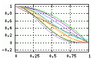
To the right is a graph of all the various windowing functions that IM has
available at the time of writing (more was added later). Yes, there are a lot
of them, as windowing functions have been the subject of intense study by
numerous signal processing experts.
All of the windowed filter functions will generally be used to modulate a Sinc
(or Jinc) weighting function using a support of either 3, or 4 for Sinc (3 or
4 lobes), depending on the class of windowing function being used (see below).
For example a '
Blackman' windowing filter will use 4 lobes, but
'
Lanzcos' will use 3 lobes. This is dependant on your IM version,
so check the
Verbose Filter Expert Option if you want
to be sure.
As you can see all the windowed filtered functions produce a muted form of the
original
Sinc() function that is also shown. And other than the amount
of
ringing a specific filter generates there is often
very little to distinguish one windowed filter from another.
Probably one of the best windowed filters is '
Lanczos'.
While other people swear by the '
Blackman',
'
Bohman', '
Hann' (a cosine tappered
bell), '
Hamming' (cosine bell variant),
'
Cosine' (single cosine lobe); as windowing functions. All
these functions are based on the use of a Sinc, or a Sine/Cosine functions in
their formulation, which supposedly ensures the function will have a good
frequency response.
The other windowing filters include '
Welch' (parabolic),
'
Parzen' (cubic spline), '
Kaiser'
(Bessel), and probably simplest '
Bartlett'
(triangular or linear). Typically these functions were created for their
simplicity and speedy calculation, though they are typically regarded as having
a poor 'frequency response'. Also many of these windowing functions are used
as resampling filters in their own right. For example the
'
Bartlett' (which is probably the real odd ball of all the
windowing functions) is actually the same mathematical function used for
a '
Triangle' filter, as well as the '
Bilinear'
interpolation filter.
All the functions (except '
Bartlett') form two basic categories
of windowing functions.
- A tapering 'bell' shaped curve, such as '
Hamming',
'Hann', 'Kaiser', 'Blackman',
'Bohman', and 'Parzen'.
- And an untappered 'lobe' type windowing function which quickly falls to
zero, before being 'cut off' by the windows support, such as
'
Lanczos', 'Welch', and
'Cosine'.
If you study the above window function graph you can see how the shapes of the
two styles of filter differ. However the two categories of windowing
functions do not seem to be as important as the overall 'frequency response'
you get from using a trigonometric defined curve.
The tappering 'bell' shaped windowing functions will use a
Lobes Support over 4 lobes of the Sinc Weighting
function (or Jinc function in cylindrical (distort) resampling). The
untappering 'lobe' type of windowing filters will default to using a 3 lobe
support. This results in a rough equivalence between the two types of
windowing filter, due to difference in the windowing function roll off. This
also means that the untappering windowed filters will, by default, be slightly
faster that the tappering ones.
The default number of lobes that filters should have was discussed in the IM
Forums Discussion,
Add Cosine
windowing?. Of course if you want you can change the
Lobes Support or even just the general support of
any of the resize filters. They are all about the same only with very slight
variations in the amount of ringing and blocking effects that is produced.
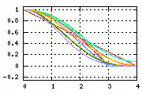
To the right is the same windowing functions but using the default
Lobes Support as defined by IM according to the
tappered/untappered nature of the function.
As you can see over the first two lobes (the primary ones with the most
influence) there is very little difference between any of the filters, and all
show a very similar 'roll-off' over that range. However the ordering of the
functions have not changed much, with the extremes still being between
'
Welch' and '
Parzen', and with
'
Lanczos' falling squarely in the middle of the resulting
curve roll-offs.
![[IM Output]](graph_windowed_sinc.gif)
And to the right is the resulting windowed-sinc filters that would be provided
by an user selecting those windowing functions using the above defaults. As
you can see the final weighting curves are all very similar, and as expected
all are sandwiched between the extremes of '
Welch' and
'
Parzen'.
You can look at more detailed definitions and graphs of most of these various
windowing functions, and their results in the Fourier Frequency Spectrum on
Wikipedia, Window
function.
In summery: I have not found a great deal of difference in results
between these various windowing functions. Also my reading of research papers
of results all seemed to be more of a qualitative opinion of their
suitability, rather than anything concrete.
My feeling is that just about any windowing function can be used, but if I was
to pick one you are better sticking to the most popular '
Lanczos'
windowing filter. It is in the middle of all the above filters, has good
frequency spectrum response, and is generally a good choice as a resampling
filter.
On the other hand an image processing expert, who has been instrumental in
ImageMagick's Resampling filters, disagrees with this. Though he selects
filters based more on the exact requirements for specific images. You can see
his suggestions and comments in
Techniques Recommended by
Nicolas Robidoux.
Lanczos Filter
We have mentioned the '
Lanczos' filter a number of times
already. It is probably the most well known of the
Windowed Filters, which falls in the middle of the range of windowed
filters we have seen. Essentially it does not 'roll-off' too fast, or to
slow, and has a good frequency response in the resulting fourier transform.
Basically '
Lanczos' makes a great starting point for any
sort of filter work, and has been used extensivally in the recent development
of
Windowed Jinc Cylindrical Filters (see below).
The '
Lanczos' filter basically uses the first 'lobe' of the
Sinc() function, to window the
Sinc() function. That is, the
filter's weighting function is used to set the filter's own windowing function.
Many people see this as being a good reason to select it over the many other
Windowed Sinc Filters. Though there is little to no real evidence that it is the
best, it is a solid middle range filter.
By default IM defines the '
Lanczos' filter as having 3 'lobes'.
The reason for this is because the windowing function itself is 'untappered',
in that it is just a single lobe that cuts off, with the functions first zero
crossing coinciding with the window support limits. See
How Windowed Filters Work above.
![[IM Output]](graph_lanczos_filters.gif)
However a 2-lobed '
Lanczos2' filter (Lanczos with
a default lobes of 2, added for easy user selection) has also been found to be
popular, as it will avoid the positive
Ringing
Artefacts that can be generated by Windowed-Sinc filters.
The '
Catrom' (actually the 'Catmull-Rom Filter'), is almost an
exact duplicate of the '
Lanczos2' filter though as it is a
Cubic Filter it is much faster to generate
mathematically. That however is typically not a problem with the way IM caches
filter values before processing images.
Having said this, a long
Discussion in the IM forums seems to indicate that for orthogonal
(tensor) resizing, a 4 lobe '
Lanczos' actually works better for
shrinking images, while preventing
Moiré in
images of objects with very fine patterns, but at the cost of more
Ringing.
Windowing Size in Lobes
As I mentioned, the underlying Sinc (and Jinc) filter function is actually
infinite in size. Though by default IM limits them using the specified
windowing funtion to a much smaller, more practical size.
However there may be some situations where you really want to try and get a
much better, more exact resizing of the image using a much larger, and slower
window (support) size. That can even be done quite simply using the
Filter Support expert control, just as we did for
Gaussian-like filters.
The windowing function itself will (in most cases) reduce the Sinc (and Jinc)
to zero over the
support setting range. But as
the windowing function is scaled to fit the 'support' window, the resulting
filter function will also change.
![[IM Output]](graph_lanczos_lobes.gif)
For example, to the right I have graphed the '
Lanczos' windowed
filters, against the
Sinc() function as a reference, using various
'support' settings from 2 to 8. Note that the actual size of the filter is
limited by the actual support size used. The smaller the 'support' the faster
the filter, but the less exactly the function follows the mathematically ideal
Sinc() function.
Look closely at each of the graphed curves. The 'green' (support=2) curve
only has the main central peak, plus one negative 'lobe' (Equivelent to
a '
Lanczos2' filter). After this the function is just zero, and
not used. The next 'purple' (support=3, and the default
'
Lanczos' filter) curve, has a much larger first negative 'lobe',
then a smaller positive 'lobe'. This continues on with more lobes being
added, as the support size increases by integer increments. The additional
lobes are smaller and smaller in height, producing less and less influence on
the final result, but with the initial 'lobes' becoming higher (more
influence, and hence more
Ringing effects).
For best effect you would use a support setting, to generate a filter with
that many up/down 'lobes' in it. That is you would have the windowing
function, and thus the 'support' of the filter, end at a 'zero-crossing'.
However while the
Sinc() function has 'lobe' (zero-crossings) at
integer 'support' settings, the
Jinc() weighting function does not.
This presents a problem for users wanting to adjust the support window for
a filter being used with the
Distort
Operator. In fact,
Jinc() has 'zero crossings' at highly
irrational numbered
positions. These zero crossings are very difficult to work out without being
a mathematics expert.
To make it easier to set a filter in terms of the number of 'lobes' another
special setting was created, "
-define filter:lobes={integer}".
If the filter is being used by a 2 dimensional image resampling operator such
as the
General Distortion Operator, which
generally the use of
Jinc() as the base function, it will look up
a table of the first 20 zero crossings for the filter, and set the '
support' setting to that value. This means you
don't have to try to find the appropriate support setting for the
Jinc() function, just specify the number of lobes you want to use.
Because of this it is better to specify Windowed Sinc or Jinc filters in terms
of the number of 'lobes' you want the filter to contain, rather than
specifying
a more direct '
support' setting. If neither
Sinc() or
Jinc() functions are used for the filter definition,
then the the '
filter:lobes' setting is used to calculate the
appropriate '
support' setting for the filters
usage.
Note however that a '
filter:support' setting will override any
'
filter:lobes' setting given, so it is better to only define the
'
filter:lobes' expert option, especially if using the
General Distortion Operator.
Lagrange Filter
Just as the '
Gaussian' filter is
a mathematically slow function (not that it affects the overall speed very
much thanks to IM's caching of results), the
Sinc/Jinc Windowed Filters are even slower and more complex to compute
due to the need to compute trigonometric functions for use in both weighting
and windowing functions.
The '
Lagrange' filter however generates a piece-wise cubic
polynomial function to approximate a windowed filter. (See
Wikipedia: Lagrange
Polynomial). Just as
Windowed Filters are
adjustable according to the
Support Setting,
the '
Lagrange' filter also will adjust itself according to that
setting.
The default
support setting of 2.0 generates
a '
Lagrange' filter (order 3). This filter is quite good for
both enlargement and shrinking of images. with minimal
blocking and
ringing effects and no
blurring effects.
|
The Support Expert Control is really
defining the 'order' of the Lagrange filter that should be used. That is,
the default 2.0 support Lagrange filter, generates a Lagrange filter of
order 3 (order = support × 2 - 1, thus support=2.0 => Lagrange-3
filter). This is why you can really only use a setting in half-integer
sizes.
As such, to get a Lagrange order 4 filter you would use the option
-define filter:support=2.5
|
![[IM Output]](graph_lagrange_windowed.gif)
With larger
support settings, the
'
Lagrange' filter generates
Windowed Sinc
Filters without needing a complex trigonometric function calculation, or
even additional windowing functions. The larger the support setting the
closer the filter emulates a
Sinc() function, but also the slower the
calculation. (see graph of larger support Lagrange filters left).
Using smaller
support settings and the
'
Lagrange' filter emulates most of the various
Interpolated Filters. That is, a support size of
'
0.5' will generate the '
Box' filter, and
'
1.0' a '
Triangle' filter.
The
support setting is limited to adjustments
by half-integers, and using any other support factor is not very productive.
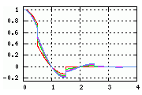
The other half-integer support, Lagrange Filters (generating even orders),
produce a very disjoint set of filter weightings, and much like the
'
Box' filter, they can produce some strong
blocking resize artifacts. On the other hand
for small scale resize this can ensure that images keep sharp for very small
resize adjustments.
These 'even' ordered '
Lagrange' filters actually highlight the
main disadvantage of using this filter, which is that the weighting function
is not a 'smooth' gradient. In large scale enlargements this means you can get
visible changes in the generated gradient. This is rarely a problem however,
except in those extreme cases.
Basically it represents a filter that universally creates an appropriate for
the current '
support' setting, regardless of how big
or small that setting is. It is a self-windowing resize filter.
|
The 'Lagrange' filter was not fully
defined and usable until IM version v6.3.7-1.
|
Cubic Filters
As many image experts were trying to find a better and faster-to-calculate
filter for image resizing, a family of filters evolved, and became known as
Cubic Filters. These are much like the
Lagrange
Filters shown previously, and were made up of a smaller fixed set of
piece-wise sections. However unlike Lagrange filters the pieces were designed
to fit together to form a smooth curve, to reduce sharp
blocking effects.
![[IM Output]](graph_cubics.gif)
Shown in the graph left are four such 'smooth' cubic filters that are
pre-defined within IM, and well known for use as resize filters.
The '
Spline' filter (also used as an alias and default
seetings for the general '
Cubic' filter function) emulates a
Gaussian Blurring Filter. This curve is also
known as a 'B-Spline' interpolation curve, and is also commonly used for
drawing smooth lines through a collection of points. It is also often used for
camera and object motions in animations, to produce a smooth flow though the
user provided control points.
Also shown is '
Catrom', or more correctly the 'Catmull-Rom
Filter' or the 'Keys Cubic Convolution' which generates a smooth non-blurring
form of
Interpolation Filter. However it
can overshot slightly. It is essentually an ideal self-sharpened filter, and
as such also the function commonly used for basic
Bi-Cubic Interpolation.
And finally the '
Hermite' Cubic filter, which is type of
smoothed triangular
Interpolation Filter,
That will smooothly slow (roll off) at the input coordinates. Basically it
rounds off strong edges while preserving flat 'color levels' in the original
image.
Cubic Filter Families
The above are the most common 'named' filters of the Cubic Curves, but they
also belong to specific families of Cubic Filters.
The '
B-Spline' family of cubics is essentually equivelent to various
degrees of
blurring of the results.
Typically ranging from the very
blurry
'
Spline' filter, and the edge rounding but
blocky results of the '
Hermite'
filter.
Then there was the '
Cardinal' family, which produces filters
compromising between
blocking and
ringing artifacts and from which the
'Catmull-Rom Filter' ('
Catrom') evolved as a balanced compromise
of these artifacts.
These two families then merged to form the '
Keys Cubic Filter Family',
which linked the 'Catmull-Rom Filter' (Keys
α = 0.5) with the
'B-Spline Cubic Filter' (Keys
α = 0.0).
The Keys family of filters also has the special property of preserving any
linear (affine) gradient that may exist across the image. The
ringing and
blurring effects of a keys family filter would only come into play when
an image contains strong color changes, rather than smooth gradients of color.
Confused by the variety? Of course you are. So was everyone else!
The problem is that the results of filters are often very subjective,
dependant on the image, and the restrictions of the 'family' you are using.
Just what made a good filter really depended on who you asked, whether you
were enlarging or shrinking, and what image you were processing.
In some ways it still is, confusing. It took me over two years of muddling
around, reading, and playing with the various filters to come up with the
start of this summery, and even now it is still evolving. Image resizing is
a very subjective area, difficult (actually its proven to be imposible) to
quantify in any real way. There is no such thing as a 'perfect' resize.
Mitchell-Netravali Filter
Into this, Don P. Mitchell and Arun N. Netravali, came out with a paper, '
Reconstruction Filters in Computer Graphics', which formulated two
variables known as 'B' (as used for 'B-spline' curves) and 'C' (as used for
the 'Cardinal' curves and equivalent to the 'Keys' filter
α
value). With these two values you can generate any smoothly fitting
(continuious first derivative) piece-wise cubic filter.
![[IM Output]](../img_diagrams/cubic_survey.gif)
More importantally they then surveyed a group of 9 image processing experts,
rather than just relying on their own oppion, to classify the
Artefacts produced by slightly enlarging images using
various values of B and C. The results of that survey are shown in the
recreated diagram to the right. The 'green' area represented values the
experts regarded as producing an acceptable result, while the various other
areas produce the various types of
Artefacts.
This image is important, as it really shows the relationships between the
various
Artefacts and the various different types
of filters that can be produced.
You can also see from the results why the 'Keys' family of filters became so
important, as one of the better methods of generating good cubic filters. Its
filters basically fell in a line directly through the area regarded as
'acceptable' by the image processing experts.
From this survey, Mitchell and Netravali determined that the best filter was
a 'Keys' family filter, which fell in the middle of the acceptable area, using
B,C values of 1/3,1/3. This filter is now known as the 'Mitchell-Netravali
Filter' and is available in IM as the '
Mitchell' filter
setting. Basically it is a compromise of all the resize artifacts. It is
also the default filter used for IM image enlargements.
All the built-in 'named' Cubic filters: '
Mitchell',
'
Robidoux', '
Catrom', '
Spline', and
'
Hermite'; have also been marked in the above diagram, showing
what those experts would think of those specific filters. Also shown are the
lines representing the 'B-Spline', 'Cardinal' and 'Keys' filter families.
Internally all these filters only differ by the pre-defined B,C settings of
the filter, in fact IM uses the same internal function to generate all cubic
filters, only with different B,C settings to define those filters.
Cubic B,C Expert Controls
You can use the special expert settings to set the B,C settings that a
Cubic Filter is using.
To do this you need to select the general '
Cubic' filter
'function' (or any of the other named cubic filters), and the desired
'
b' and '
c' expert settings. For example...
-filter Cubic
-define filter:b=value
-define filter:c=value
The expert settings will override the internal defaults for the given filter
when it is used by a resize or distort operator. As such the order of the
above options does not matter, as long as you have "
-define" or "
-set" all the global expert settings
desired before the image processing operator is used.
If one of the '
b' or '
c' settings has not been
defined or set, its value will be calculated from the other value on the
assumption that you are wanting a 'Keys' family filter (along the dotted line
in the Mitchell-Netravali Survey diagram). Remember the '
c' is
equivalent to the Keys
α setting, while '
b' can be
thought of as a cubic spline 'blur' setting.
These expert settings provide a good way for users to 'tune' their image
resizing to get exactly what they want (whether they are using
Resize or
Distort).
The '
b' setting is easier of the two to understand. Just think of
'b' as 'bluriness'. A value of b=0 is the very sharp (Catmull-Rom filter),
which tends to produce a negative halo
Ringing and
some
Aliasing or Moiré effects. A value of b=1 tends
to produce an overly blurry (the Spline or Gaussian-like) effect.
This makes it easy for experts (or even normal users) to adjust this value to
find a filter that is 'good to them'.
To the right is a table of the B,C values for the specifically 'named' Cubic Filters.
Remember 'Hermite' is the only built-in cubic filter that does
not form part of the 'Keys' filter family. It also has the smallest support
('1.0') of all the BC Cubic filters, and does not contain
a negative lobe.
The 'Robidoux' and 'RobidouxSharp' filters are very similar to
'Mitchell', but rather than the result of a survey, they were
determined mathematically for special use as a Cylindrical Filter.
The 'Robidoux' filter is the default
filter used by the General Distort Operator
(see below).
| |
| Filter | B
blur |
C
Keys α |
|---|
| Hermite | 0.0 | 0.0 |
| Spline | 1.0 | 0.0 |
| Catrom | 0.0 | 1/2 |
| Mitchell | 1/3 | 1/3 |
| Robidoux |
0.3782 | 0.3109 |
Robidoux
Sharp |
0.2620 | 0.3690 |
Robidoux
Soft |
0.6796 | 0.1602 |
|
|
The 'Parzen' windowing filter uses a 'Spline'
filter as its windowing function. As such you can re-define this windowing
filter in terms of B,C expert options. How useful this is, and what effect
it has on the resulting windowed Sinc (or Jinc), is unknown, and not
recommended.
|
Cylindrical Filters
- for Distort
As we have touched on a number of times already, the
Distort Operator uses the filter setting to
resample images in a slightly different way to the
Resize Operator.
Specifically
Distort applies the filter
using the 'radial' distance between the 'sample point' and the actual pixels
within the sampling area of the source image, to determine weights of each
pixel and thus the final color at the sample point.
Resize in contrast, processes the image twice
using orthogonally aligned filters. Once in the X direction, and then again in
the Y direction, it is thus limited to simple rectangular resizing of images,
and does not involve the use of
Virtual-Pixels.
That is to say
Distort applies the filters
to produce '
Cylindrical' shapes rather than 'Box' shapes, so as to
allow free-form distortions of images, including rotations and variable
scaling (stretching and compression) in any direction, not just along the X or
Y axis.
Because of this the filters themselves often need to be adjusted or are
designed specifically for this type of usage.
Interpolated Cylindrical Filters
Here I use a '
Box' filter to enlarge a single
pixel image by 30 times using the equivalent
Resize and
Distort operators.
convert xc: -bordercolor black -border 1 \
-filter Box -resize 3000% dot_resize_box_black.png
convert xc: -bordercolor black -border 1 \
-filter Box +distort SRT 30,0 dot_distort_box_black.png
|
As you can see when the '
Box' filter is used
as a Cylindrical filter you get a circle (or a cylinder in 3 dimensions).
However because of the way the filter is handled you get some areas where two
pixels are sampled (equally) to produce a perfect mid-tone gray.
You can think of a cylindrical box filter converting the source image into
a whole set of overlapping circlular pixels that are blended (not added)
together.
Here is a more colorful example of the results of expanding an image using
a 'Cylindrical Box' filter for enlargement...
convert \( xc:red xc:white xc:black +append \) \
\( xc:blue xc:lime xc:white +append \) \
\( xc:black xc:red xc:blue +append \) -append \
-filter Box +distort SRT 30,0 color_box_distort.gif
| |
![[IM Output]](color_box_distort.gif)
|
With a distorted image, these circular pixels are also distorted into
a set of overlapping ellipses. For example...
convert \( xc:red xc:white xc:black +append \) \
\( xc:blue xc:lime xc:white +append \) \
\( xc:black xc:red xc:blue +append \) -append \
-alpha set -virtual-pixel transparent -filter Box \
+distort Perspective '0,0 0,0 0,3 0,90 3,0 90,30 3,3 90,60' \
color_box_distort.png
| |
![[IM Output]](color_box_distort.png)
|
|
The support 'radius' for a cylindrical 'Box' filter is
increased from '0.5' to '0.707'
(sqrt(2)/2). This ensures the filter will always find at least
one source pixel in the circular sample area (diagonally). This is the
minimum practical support size for any cylindrical filters.
No other filter has this coverage problem, requiring an increase in support.
|
|
If the support is not at least '0.707', then you may get areas
of your image in which the filter 'misses' all source pixels, and thus
produce a Resampling Failure.
Using a larger support setting also produces interesting patterns. As
'circles' become larger, and more pixels will become blended together.
For example...
convert \( xc:red xc:white xc:black +append \) \
\( xc:blue xc:lime xc:white +append \) \
\( xc:black xc:red xc:blue +append \) -append \
-filter Box -define filter:support=0.83 \
+distort SRT 30,0 color_box_distort_overlap.png
| |
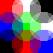
|
The result is a sort of circular form of a Blend
Interpolation.
At a support of 1.0 or larger every resample will be a 'box' or 'average'
blending of at least two pixels.
|
Here is a comparison of a number of the interpolation filters. Gray colors
are used so that you can see over and undershoots. The top line using
an orthogonal resize, while the bottom line uses a cylindrical distortion.
for filter in box triangle hermite lagrange catrom
do
convert xc:gray80 -bordercolor gray20 -border 2 \
-filter $filter -resize 2000% dot_resize_$filter.png
convert xc:gray80 -bordercolor gray20 -border 2 \
-filter $filter +distort SRT 20,0 dot_distort_$filter.png
done
|
Box
|
Triangle
|
![[IM Output]](dot_resize_hermite.png)
![[IM Output]](dot_distort_hermite.png)
Hermite
|
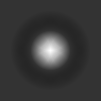
Lagrange
|
![[IM Output]](dot_resize_catrom.png)
![[IM Output]](dot_distort_catrom.png)
Catrom
|
You can see how the results are similar but with different syles of
Artefacts being generated, both internally and
externally (ringing), by the two different ways in which the filter is being
applied. The internal artifacts is especially evident in the
'
Triangle' filter.
However remember that interpolation filters are not particularly good for
extreme minification (shrinking) of distorted images, but they are very good
for magnification (enlarging).
Cylindrical Gaussian
The one filter which produces no difference in results between an
orthogonal 'resize' and a cylindrical 'distort' forms, is the special
'Gaussian' filter...
convert xc:red -bordercolor yellow -border 1 \
-filter Gaussian +distort SRT 33,0 -normalize dot_distort.jpg
| |
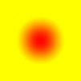
|
This is actually one of the special proprieties of this filter (known as
separability), and one of the reasons why many cylindrical resampling
implementations use it as the default filter. It was the default for the
original EWA paper, but is also very blurry in its results. ImageMagick also
used it when distorts were first implemented, but not any more.
Just as it is for orthogonal resize, a '
Gaussian' filter will
produce absolutely no
Aliasing Artefacts in the
resulting image, even when you apply it to the special 'rings' image. But the
cost of this is a blurry result, even if little or no distortion is actually
involved.
Similarly as given in the discussion on the
Sigma
Expert Control, you can also use this filter as a type of interpolated
filter.
|
As of IM v6.6.5-0, IM no longer used this filter, by default for Image Distortions. Instead another filter
'Robidoux' filter specifically
designed to produce a sharper result is used.
In any case, before this version distortions were also very blurry due to
a mistake in its implementation. Upgrade if you have an older version and
want to use Image Distortions.
|
|
Before IM v6.6.7-6, IM would use a slightly larger 'sigma' value for
a Cylindrical Gaussian, of 1/sqrt(2) or approximatally 0.707, instead of
1/2. This resulted in a slightly more blurry result, which was to reduce
posible Aliasing Artefacts.
This was a mistake which was created by following a research papers
recommendation, in passing the larger support for a Cylindrical Box Filter, into the
Gaussian Filter. The reasoning that was put forward was that Gaussian is
essentually a blurred box. It isn't. A Gaussian is a blurred impulse not
a blurred box. This version removed that mistake, which now means you
should get equivelent results with either resize or distort, when the
gausian filter is used.
I personally find using this slightly larger sigma value does indeed smooth
out any 'blocking' artifacts along aliased diagonal edges when doing
enlargements of line drawings. But that is a special case.
|
Windowed Jinc Cylindrical Filters
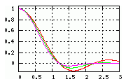
The
Jinc() function (sometimes inaccurately called
a '
Bessel' filter) is the 'Sinc' equivalent for use with
a cylindrical filtering operation. Though very similar and closely related to
Sinc(), it is designed to filter a rectangular array of values using
a radial or cylindrical distance, rather than only in orthogonal (axis
aligned) directions.
If you look at the provided graph of the
Jinc() function, you will find
that its first 'zero-crossing', representing first ring of near neighbours,
falls between the values of 1.0 (for orthogonal neighbours) and the square
root of 2. That is the zero crossing has an approximate value of
'
1.2196699'.
The way
Jinc() function works is that if the sampling point is equal to
an actual pixel value, the
Jinc() function will assign a positive value
to the slightly closer orthogonal neighbouring pixels, but then assign
a similar negative value to the slightly further diagonal neighbours, and so
on as it moves further though the 2 dimentional array of values. As a result,
when no scaling (distortion) is performed the contributions of the neighbours
should, in theory, cancel each other out.
This is why the
Jinc filter is mathematically the preferred solution to
cylindrical resampling of a square array, and thus the 'ideal' filter for
Distort elliptical resampling method (EWA).
This is not to say it is a 'perfect' filter from a human point of view.
Because of this, selecting any
Windowed Filter while
using the
Distort Operator, will
substitute the normal '
Sinc()' function with the equivalent
'
Jinc()' function.
As the
Jinc() function has zero crossings are at non-integer positions,
it is very important to specify the filters support in terms of special
Lobes Support Setting introduced above for
Windowed Sinc Filters.
The biggest problem with using a 'Windowed Jinc' filter is when the source
image contains a pixel level hash pattern (such as provided by
"
pattern:gray50", see
Built-In Patterns). In this situation all the orthogonal neighbours are
different to diagonal neighbours, and as a result, the image becomes heavily
blurred by the '
Jinc()' function.
However just about any other pattern, such as lines, edges, corners, all
remain quite sharp and clear when using a 'Windowed Jinc' filter, making it
still a good function to use.
This 'problem' can be a good thing, as it means that 2-dimentional cylindrical
Jinc derived filter can be used as method of removing strong pixel hash type
patterns from images, such as those generated by a
Color Reduction Dither, without greatly
effecting the sharpness of the rest of the image. That is it could be used as
a 'Dither Removal Method' (see below).
Distort and Filters in the No-Op case
Ideally, no-op distortion should return exactly the same image. But as you
have seen in previous examples, this may not actually happen.
The resize (2-pass 1 dimensional) filters: Lanczos (Sinc-Sinc), Lanczos2,
Catrom, Hermite, Triangle, and many other resize filters do have this
property. The pixel pattern is preserved exactly if the image is not scaled.
On the other hand smoothing or blurring filters, like Gaussian, Cubic, and
Quadratic will blur an image if applied to a nearly no-op case. Note that
even the resize filter default, Mitchell-Netravali, also contains some blur in
it, as is basicaly a blend of B-spline 'Cubic' smoothing filter and the
Cublic two-lobe sinc equivelent Catmull-Rom filter.
|
The resize operator will by default short-circuit itself, so as to do
nothing for the no-op case. As such unless you specifically specify
a filter you can not generate a 'noop' resize.
Distort will never short-circuit for the no-op case, and that is to ensure
consistancy in animations in which the distortion scaling may pass through
the 'no-op' case. This is something that is typically not a concern with
resize.
|
While many resize filters will preserve images in the no-op case. Cylindrical
(distort) methods, will basically never produce a perfect no-op distortion.
Any no-op distort will at least minimally distort the colors of an image, even
though the image itself is not distorted.
What happens is that by using a cylindrical filter, the contribution of
orthogonal neighbourhood pixels will be different to that for diagonal
neighbourhood pixels. They are essentually different distances from the
lookup point (centered on an actual pixel for the no-op case. The 'Jinc'
function tries to reduce this color distortion by canceling out the
contributions of the orthogonal neighbours with that of the diagonal
neighbours. That is actually part of its mathematical definitation.
In the worst case, a 'pixel level hash', every diagonal pixel neighbour is
different to every orthogonal pixel neighbour. In this case the filter
weightings will enhance rather than cancel the contributions. As a result
this type of image will tend to produce very sever color distortions for
a no-op distortion of any image containing a 'pixel level hash'.
Here for example I actually use this special property to remove a hash
pattern from an image. No scaling is used, just a distortion applied
2-dimentional 'convolution' on the image.
convert -size 100x100 pattern:gray50 hash.png
convert hash.png -filter Lanczos -distort resize 100% hash_removed.png
|
|
The reason the percieved gray-level of the hash is so much darker than the
the overall gray-level of the hash is because of the way Human Color Perception works.
The fix is to include '-set colorspace RGB' in the above to
tell IM that we are resizing in linear-RGB colorspace See Resizing with Colorspace
Correction.
|
The above is actually equivelent to a
Convolution with a Jinc-like kernel function.
But as you can see the special property of the Jinc Function (in this case
EWA Lanczos, or Jinc windowed Jinc), completely removed the hash pattern that
was strongly present in the original image. The only part where it now remains
is along the edges, where the 'abyss' (no virtual pixel contribution) that
surrounds the image proper, can effect the results.
The actual number of lobes of a Windowed Jinc filter, has an enormous bearing
on the results as well. With 2 lobes, a 'pixel level hash' has a tendancy to
be preserved, though dulled or blurred.
convert hash.png -filter Lanczos2 -distort resize 100% hash_2_lobes.png
|
The contribution of the windowing method applied to the Jinc function, will
also have major influence on this effect. In some case even enhance the hash
pattern further.
|
![[IM Output]](hash_2_lobes.png)
|
The question thus arises of how to tune the distort filters so as to minimize
the color distortions generated by the filter for a no-op distortion. The way
Nicolas Robidoux decided to do this was by selecting a blur (rescaling of the
support of the filter kernel) that tends to preserve orthogonal edges as much
as posible.
Cylindrical Lanczos Filter
Now as discussed above "
Lancoz"
is normally defined as a '
Sinc()' function used both the weighting and
windowing of the filter.
But when used as an EWA cylindrical filter, BOTH of the weighting functions
will be replace by the '
Jinc()' function. That is not only is the
weighting function replaced (as it is for the other linear windowed filters),
but it also replaces the windowing function, producing a Jinc windows Jinc
weighting function.
As such a 'Cylindrical Lanczos' will select a "Jinc windowed Jinc" with the
same number of lobes (default 3). This technique was first advocated by
Andreas Gustafsson, in thesis on
Interactive (Local)
Image Warping (page 24). He specifically used a 2-lobed Cylindrical
Lanczos (Jinc windowed Jinc) filter which he named '
Lanczos2D'
(see next). This was simply an obvious extension for the planar (EWA)
situation. Hence the use of the same name.
For more info on this see this
Post in BC-splines Discussion.
Lanczos2 - 2-lobed Lanczos
For convenience this two lobed version, simply named
'
Lanczos2', was included in IM v6.6.4-10, specially for
use in distortions.
It is really just a cylindrical '
Lanczos' (Jinc-Jinc) filter with
a '
filter:lobes=2 expert setting. See the
graph above, and as IM filter automatically
switches between using
Sinc(), and
Jinc() functions as
appropriate, it is not just for a '2D' (cylindrical) use.
It can can also be used for resize too (as a Sinc-Sinc function), though
I don't recommend it as it is probably a bit too small, and becomes pratically
equivelent to the various other cubic functions.
LanczosSharp - A slighly sharpened Lanczos
It was observed that windowing a
Jinc() function leads to much blurrier
EWA distort results, than analogous windowed
Sinc() function, in the
orthogonal resize results (especially with thin lines). This was particularly
the case for mild distortions. Basically, the
Jinc() function has some
special properties and windowing the
Jinc() function messes up those
specific and desirable properities.
With some calculation, Nicolas Robidoux, Professor of Mathematics at
Laurentian University, was able to work out a slightly sharper version of
a 3-lobed Cylindrical Lanczos, now available as
'
LanczosSharp', that to some extent fixed the problem for
distorting images.
However the resulting filter still has the strong blurring of low level 'pixel
hash' patterns, of
Windowed Jinc Cylindrical Filters.
Lanczos2 Sharpened
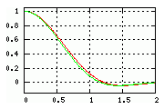
The same problem was more severe in '
Lanzcos2' filters, so
Nicolas also produce a sharper '
Lanczos2Sharp' filter,
using a slightly larger
Blur Expert Control. This
resulted in a filter with only minimal blurring for vertical or horizontal
lines in a 'no distort' case.
This sharpened filter results in a small shift of the zero point, so that it
is now located at approximatally '
1.1684'. This may not seem
like much but it makes a huge difference in the amount of blur the filter
generates for images with little to no distortion.
Lanczos Radius
![[IM Output]](graph_cyl_lanczos_3.gif)
This is an EWA Lanczos filter that is blurred (sharpened) so that the number of
lobes used (3 by default) fits into an integer support radius. That is
a 3 lobe EWA Lanczos (based on a Windowed Jinc) is sharpened to have a support
of exactly radius 3.
You can use the
Lobes Expert Control, to achieve the
same result, but as it involves an adjustment based on the known zero crossing
of the Jinc function, but it is not an easy calculation to make.
Nicolas recommended the addition of this filter so you don't need to do that
calculation, and allow you to test out this very specifically sharpened
filter.
FUTURE: table of blur factors to the Jinc Windowed Jinc filters.
Include number of lobes as a reference.
Robidoux Cylindrical Filter
![[IM Output]](graph_robidoux.gif)
Strangely, experiments were showing that using a
Mitchell-Netravali filter as a cylindrical filter was producing near
equivalent 'sharp' results for the 'no distort' case. And yet the filter has
no relationship to its use as a cylindrical filter, as it was selected by a
'social study' for orthogonal (resize) filtering.
The '
Mitchell' filter was especially good at preserving low-level
'pixel hash' patterns, which normal
Windowed Jinc Filters
destroyed in cylindrically filtered images.
Nicolas then found that by a bizarre coincidence that '
Mitchell'
was extremely close to the 'sharpened' form of '
Lanzcos2' filter
discussed above.
This in turn lead to him developing a
Keys Cubic
Filter which preserves vertical (and horizontal) lines perfectly. Also
this new filter does so at a lesser computational cost, as a cubic function is
very cheap to compute than a Jinc function.
This cubic filter has been added to IM as the '
Robidoux'
filter, as of IM v6.6.5-0, and is also the default filter used by
Distort and its
Elliptical Weighted Resampling method,
specifically due to its minimal-blur propriety for images with only minimal
distortion.
That is not to say that it is 'the best' filter to use, and even Nicolas likes
to use other filters, but it is a very good compromise, just as
'
Mitchell' is a good compromise for orthogonal (tensor) resizing.
I have marked this filter on the "
Cubics Map" generated by the
Mitchell-Netravali
Survey, so you an see just how closely related to the '
Mitchell' filter it is. It would in fact make
a reasonable filter for either orthogonally resized or cylindrically distorted
images.
Robidoux Sharp Cylindrical Filter
The '
RobidouxSharp' filter is a slightly sharper version
of the '
Robidoux' filter, though some
feel that the results are too sharp.
It is designed specifically so as to preserve images containing pure black and
white pixels with the minimum of error, in the "no-distort" case.
Specifically that the weightings the orthogonal neighbouring pixels, exactly
match the negative weightings of diagonal neighbouring pixels in
a 'no-distort' case.
By coincidence the '
Mitchell' filter
happens to fall almost exactly between the '
Robidoux' filter and the '
RobidouxSharp' filter, and all belong to the
Cubic Keys family of filters.
As such users can select from any of these three filters to control the
blur-sharpness of results in near 'no-distort' situations.
For details of this filter see the
BC-splines discussion on IM
Forums.
Robidoux Soft Cylindrical Filter
This was added much later, and is very different to the other Cylindrical
filters seen. Yes it is much more blurry to make it more useful for
upsizing or enlarging images, which allows it to avoid some staircasing
effects on photos of brick buildings.
For more info on this see this
Post in BC-splines
Discussion. as well as this discussion from a
photo processing forum discussion.
Cylindrical Filter Summary
Nicolas Robidoux in the long, and on going, forum discussion on the
Proper Scaling of a Jinc Filter in EWA
gives this as a summary of cylindrical filters...
|
If Robidoux is too soft and RobidouxSharp too aliased, I suggest that you
try Mitchell (with distort Resize), which is pretty much halfway.
Because JPEG involves a (Discrete) Cosine Transform, I am not surprised that
the filters based on Fourier considerations (Lanczoses et al, whether resize
with Sinc or distort with Jinc) generally do better than those based on
"good approximations of smooth functions" (those based on Keys cubics:
Robidoux, Mitchell, RobidouxSharp, CatRom, whether with resize or distort).
That advantage appears to be less with PNGs (which does not destroy
information through the Fourier domain).
|
Nicolas has a lot more to say. So much he has his own section
Resampling by Nicolas Robidoux which is now
a separate and extensive page in its own right.
Expert Filter Controls
In the various sections above I introduce a large number of special 'expert'
controls, which will allow you to modify the various filters in various ways.
You define these expert settings using
Global
Define Setting (or equivalent
Set
Option).
A full summary of all the expert option in the
IM Command Line Options
Reference Page for "
-filter".
The "
-filter" setting is
in fact only used to lookup and set the expert controls appropriately so as to
define the given 'named' resize filter. These settings will override
those default values as specified above, at the time filter is setup for
a specific resize or distortion image processing operation.
|
The "-filter" setting
'Point' completely bypasses all the above filter setup, and degenerates into
an unscaled 'Nearest Neighbor' direct lookup (resize), or interpolated
lookup (distort). Thus this named filter setting effectively turns off the
scaled image lookup filter completely.
|
Now while they are available. I would like to make one final point.
Unless you are an expert (or just playing) -- It is best NOT use them!
There are few people who are expert at image processing, and unless you know
exactly what filters do and how changing them effects the filtering method,
all you are likely to do is destroy the effectiveness your image processing,
and produce a bad looking results. Especially in images other than your test
cases.
That is not to say users should not use them, and many IM Examples do make use
of them, but it is usually done to provide some special effect. When a special
option is used the reason for its use is also explained, and you should stick
to the recipe given for that effect.
You are of course welcome to use them and you can generate some very
interesting and highly unusual effects by making use of them.
The 'verbose' Filter Control
The setting "
filter:verbose" is perhaps your best friend in
figuring out and understanding the other filter controls.
For example you can verify that the Lanczos filter is defined in terms of
a Sinc windowed Sinc support 3.
convert null: -filter Lanczos -define filter:verbose=1 \
-resize 2 null: | grep '^#'
|
Note that internally the Lanczos filter is defined in terms of a fast
polynomial equivalent 'SincFast' (4 lobe) function, rather than a full 'Sinc'
function which is defined in terms of far more computationally intensive
Trigonometric Library functions.
Here we see that the Lanczos filter is defined as a Jinc windowed Jinc filter
when used with as a cylindrical (
EWA
Algorithm) "-distort" filter.
convert null: -filter Lanczos -define filter:verbose=1 \
-distort SRT 0 null: | grep '^#'
|
The '
filter:verbose' setting is the only way users can check on
exactly what the final resultant filter is, due to the use of the various
expert settings.
After the '#' commented header of filter settings, a set of data points
generated by the filter is returned. These are specifically provided for
graphing the filters data, and lets you further verify and check just what the
filter is producing without making guesses from the results of test images.
For example, extract the data of a Welch Windowed Sinc Filter...
convert null: -filter Welch -define filter:verbose=1 \
-resize 2 null: > filter_welch.dat
|
Or the raw Welch Windowing Function that was used in the above, with the
window function scaled a support range of 0 to 1.
convert null: -define filter:filter=Box \
-define filter:window=Welch \
-define filter:support=1.0 \
-define filter:verbose=1 \
-resize 2 null: > window_welch.dat
|
You can then plot that data with the "
gnuplot" command (like I did in
Windowed Sinc
Filters above)...
gnuplot
set grid
plot "window_welch.dat" with lines
|
Other Examples of Expert Filter Controls
Create a 'Raw 8 lobed Sinc' filter can be set using...
-define filter:filter=Sinc
-define filter:lobes=8
|
Use the Blackman windowing function directly as a filter (as IM did by
mistake, before v6.3.6-3).
-define filter:filter=Blackman
-define filter:support=4.0
|
The windowing function will default to 'Box' when undefined.
A 'Box' windowing function will result in no windowing of the base filter
function. For example a 'Gaussian' filter by default has a 'Box' windowing
function. The only effect a box windowing function has is a clipping of
windowed area of the function. See
Filter Support Expert
Control above.
Force the use a raw Jinc function (explicitly setting 'Box' windowing)
using...
-define filter:filter=Jinc
-define filter:window=Box
-define filter:lobes=3
|
A 12 lobed 'Lanczos' windowed filter clipped to just the first 8 lobes of the
resulting windowed filter...
-filter Lanczos
-define filter:win-support=12
-define filter:support=8
|
This makes it about four times faster, by ignoring (support clipping at 8) the
window-modulated 'tail' (to 12) of the resulting windowed-sinc filter. This
however may result in some extra but minor artifacts as a result of the
support clipping.
Using Gaussian to 'blur' an image! This is equivalent to a -gaussian 5x2
operation, but by using a no-op distort!
-filter Gaussian
-define filter:sigma=2
-define filter:support=5
-distort SRT 0
|
Note: you can not use -resize for this, as it may short circuit the operation
and result in operation not being performed at all.
Create a different filter from the 'Mitchell-Netravali' survey.
-filter Cubic
-define filter:b=0.5
-define filter:c=0.5
|
Create your own 'Keys Cubic' filter with α value of 0.4...
-filter Cubic
-define filter:c=0.4
|
Nicholas Robidoux creating this weird filter while exploring '
Interpolating EWA
Filters'
-define filter:blur=.7071067811865475
-define filter:c=.49257366
-define filter:b=2.089813051319261
-filter Cubic
|
When used to enlarge images. Pixels are converted into diamond like patterns
in a scheme that is simular to
Blend but using diamonds instead of squares.
Any use of the expert options are at your own risk. They are not meant for
production use, but as a method for exploring or producing tricky or otherwise
impossible resize functions.
Use at your own peril!
Summary of Resize Filters
The following is my own personal view after studying, recoding, and
documenting all the above filters available in ImageMagick. If you think I
may be wrong or like to express your opinion, I invite you to express your
views on the IM forum, and invite me to respond.
Interpolation Filters, such as
'
Hermite', are ideal when greatly enlarging images, producing a
minimum of blur in the final result, though the output could often be
artificially sharpened more in post-processing.
Gaussian-like Blurring Filters, such as
'
Mitchell', work best for images which basically consist of line
drawings and cartoon like images. You can control the
blurring versus the
aliasing effects of the filter on the image using the special
Filter Blur Setting.
Windowed Sinc/Jinc Filters, and the
Lagrange equivalent are the best filters to use with
real-world images, and especially when shrinking images. All of them are very
similar in basic results. A larger support, or better still, lobe count
setting, will generally produce an even better result, though you may get more
ringing effects as well, but at a higher
calculation cost.
The
Cubic Filters are a mixed bag of fast and
simple filters, of fixed support (usually 2.0) which produces everything from
the '
Hermite' smooth interpolation filter, the qualitatively
assessed '
Mitchell' for image enlargements, the very blurry
Gaussian-like '
Spline' filter, or a sharp, windowed-sinc type of
filter using '
Catrom'.
Generally if the resize results are acceptable as is, leave things alone,
as you are more likely to make things worse, not better.
Filter Comparison
Enlargement...
To give a final comparison, here I present a selection of 12 representative
resize filters. The image is an enlargement of an aliased step in an one pixel
wide line, on a dark gray background. The original image itself 'aliased' so
you should be able to see how well various filters remove any existing
aliasing effects.
convert -size 10x6 xc:grey20 +antialias -draw 'fill white line 4,0 5,5' \
-filter {filter_type} -resize 100x {result}
|
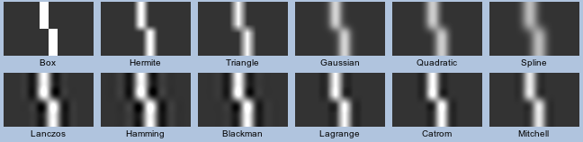
The above starts with the
Interpolated
Filters and continues with the
Gaussian
Blurring Filters, showing how much blurring these filters produce, and in
doing so remove the 'aliasing' in the original image. No ringing is produced
by these filters.
The second line starts with three
Windowed Sinc
Filters showing the heavy ringing effects they can produce. Remember
these filters are really designed for shrinking images, not enlarging. This
continues into the '
Lagrange' using its default 'interpolating'
setting, and '
Catrom' interpolated cubic filter.
The final image is the '
Mitchell' filter showing what the
'experts' subjectively agreed was the best 'ideal' filter to use for enlarging
images, with a minimal of all four
Resampling
Artefacts present in the final result.
I myself agree with their findings, but only for enlargements.
This is why '
Mitchell' is the default 'enlargement' filter used by
IM.
Shrinking...
To get an idea of the
aliasing effects, here I shrink
the crop of
Large Rings Image that we made
earlier (
105x105 pixels in size), to see what sort of
Moiré effects each of the same 12 representative filters generates.
convert rings_crop.png -filter {filter_type} -resize 100x {result}
|
![[IM Output]](montage_shrink.png)
As you can see
Interpolated Filters filters
are very heavily aliased moiré effect, which is caused as a side-effect
of the blocking artifacts these produce.
On the other hand the blurring artifacts of the
Gaussian Blurring Filters removed all that blocking Moiré effects
from the resulting image, though with a general blurring (indistinct lines) in
the resulting image. The '
Gaussian'
Filter itself does show a barely noticeable aliasing effect caused by its
infinite (IIR) filter being clipped by the
Filter
Support Setting, but that is very minor.
On the other hand the
Windowed Sinc Filters
produce a very sharp looking image with circular morié effects, of
about equal intensity across all three representative filters. This is caused
by the ringing artifacts these filters produce, generating interferance
patterns.
Finally the cubic filters also show some very light morié effects, but only
due to negative lobe ringing. The '
Mitchell' filter, producing the least ringing effect.
Note that '
Mitchell' does generate very minor effects from almost
all the resize artifacts. That is: grid-like moiré - aliasing/blocking,
circular-like morié - ringing, and blurring of the lines. All the
artifacts are however at very minimal levels, which is why it is a good all
round filter.
Here is another comparison, but this time heavily shrinking a
Smaller Rings Image smaller.
convert rings_sm_orig.gif -filter {filter_type} -resize 100x {result}
|
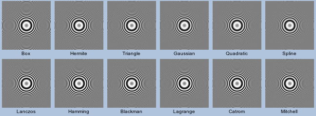
As you can see the
Interpolated Filters produce
lots of
aliasing artifacts, while the
Gaussian Blurring Filters tend to blur out more lines
than the others. But all the other filters tend to produce a reasonable job.
The Best Filter?
That is something you will need to work out yourself. Often however it depends
on what type of image and resizing you are doing.
For enlarging images '
Mitchell' is probably about the best filter
you can use, while basically any of the
Windowed
Filters (default is '
Lanczos') are good for shrinking images,
especially when some type of low level pattern is involved. However if you
have no patterns, but lots of straight edges (such as GIF transparency), you
may be better off using sharpened
Gaussian
Filter or again a '
Mitchell', so as to avoid strong ringing
effects.
The '
Lagrange' filter is also quite good, especially with
a larger
Filter Support Setting, for shrinking
images.
For those interested I recommend you look at the IM User
Discussion topic
a way to compare
image quality after a resize? which basically shows that their is no way
of quantitatively determining "The Best Filter", only a qualitative or
subjective "Best Filter".
The choice is yours, and choice is a key feature of ImageMagick.
IM's Default Filter...
It is for these reasons that '
Mitchell' is the default filter for
enlargement, as well as for shrinking images involving transparency, or images
containing a Palette (or colormap). However the '
Lanczos' will
be used in all other cases, that is shrinking normal images (typically
photographs).
For
Distort, the filter setting defaults
to the '
Robidoux' filter which was specifically designed to
minimize image blurring when no actual distortion takes place.
You can of course override these choices.
Nicolas Robidoux
Nicolas Robidoux is an image processing expert with a lot more to say and
recommend about trying to get the absolute best results from your image
resizing.
So much so he has his own section...
Resampling by Nicolas Robidoux.
Created: 10 October 2012 (split from resize)
Updated: 14 Feburary 2013
Author: Anthony Thyssen, <Anthony.Thyssen@gmail.com>
Examples Generated with:
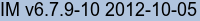
URL: https://legacy.imagemagick.org/Usage/filter/
![[IM Output]](checks_point-2.gif)
![[IM Output]](checks_point-4.gif)
![[IM Output]](checks_point-5.gif)
![[IM Output]](checks_box-2.gif)
![[IM Output]](checks_box-4.gif)
![[IM Output]](checks_box-5.gif)
![[IM Output]](checks_5.gif)
![[IM Output]](checks_box+2.gif)
![[IM Output]](checks_box+4.gif)
![[IM Output]](checks_box+5.gif)
![[IM Output]](checks_tri-2.gif)
![[IM Output]](checks_tri-3.gif)
![[IM Output]](checks_tri-5.gif)
![[IM Output]](checks_tri+2.gif)
![[IM Output]](checks_tri+4.gif)
![[IM Output]](graph_interpolation.jpg) To the right I have graphed the various interpolation filters, except for
'
To the right I have graphed the various interpolation filters, except for
'![[IM Output]](graph_gaussian.jpg) If you study the comparative graphs to the right you will see that
'
If you study the comparative graphs to the right you will see that
'![[IM Output]](graph_gaussian_support.jpg)
![[IM Profile]](plot_gaussian.gif)
![[IM Output]](graph_blurred.jpg) A Blur Control value of '
A Blur Control value of '![[IM Output]](graph_sinc.jpg) The Sinc() being mathematically perfect has some special features that
I would like to point out. First at every integer distance from the weighting
function for the filter becomes zero. This is very important as it means that
the filter does not blur the image more than necessary (unlike Gaussian Filters). It also means if an image is
resampled without resizing (a "no-op" resize) the image remains completely
unaffected by the filter. It is thus an interpolative filter though a very
complex one.
The Jinc() function is closely related to Sinc(), and has
proprieties that make it useful as a filter for 2-dimensional filtering, such
as used by the General Image Distortion
Operator. More about this function later in Cylindrical Filters. For now just note that it could also be used as the
base function for Windowed Jinc Filters.
The other major difference between Sinc() and Jinc() based
filters and previous filters we have looked at is that many of the weights are
negative. That is, they will subtract some of the nearby color pixels from
the final color, for each pixel in the image.
This may seem a little strange, but it results in a strong sharpening of the
edges of objects. Of course any negative weights generally need to be offset
by lots more positive weights further along the curve, which produces the wave
like function you see extending out a long range from the sampling point.
These extra 'lobes' of positive (and negative) weights causes ringing artifacts in images which contain very strong
color boundaries, such as in high contrast line drawings, or boundary such as
a red roof to a blue sky. These ringing effects can become even more
pronounced if filters based on these functions is applied improperly.
The Sinc() being mathematically perfect has some special features that
I would like to point out. First at every integer distance from the weighting
function for the filter becomes zero. This is very important as it means that
the filter does not blur the image more than necessary (unlike Gaussian Filters). It also means if an image is
resampled without resizing (a "no-op" resize) the image remains completely
unaffected by the filter. It is thus an interpolative filter though a very
complex one.
The Jinc() function is closely related to Sinc(), and has
proprieties that make it useful as a filter for 2-dimensional filtering, such
as used by the General Image Distortion
Operator. More about this function later in Cylindrical Filters. For now just note that it could also be used as the
base function for Windowed Jinc Filters.
The other major difference between Sinc() and Jinc() based
filters and previous filters we have looked at is that many of the weights are
negative. That is, they will subtract some of the nearby color pixels from
the final color, for each pixel in the image.
This may seem a little strange, but it results in a strong sharpening of the
edges of objects. Of course any negative weights generally need to be offset
by lots more positive weights further along the curve, which produces the wave
like function you see extending out a long range from the sampling point.
These extra 'lobes' of positive (and negative) weights causes ringing artifacts in images which contain very strong
color boundaries, such as in high contrast line drawings, or boundary such as
a red roof to a blue sky. These ringing effects can become even more
pronounced if filters based on these functions is applied improperly.
![[IM Output]](graph_sinc_windowing.jpg) For example, the graph to the right shows three functions (click to get an
enlarged view). The red function is the mathematically ideal Sinc()
function, which stretches off to infinity. The green function is a "Hann"
windowing function (based on a simple Cosine() curve . This is multiplied
with the Sinc() to modulate the more distant components of the filter,
reaching zero (or near zero) at the edge of the support window (4.0 pixel
units is distance by default for this filter).
Basically by selecting '
For example, the graph to the right shows three functions (click to get an
enlarged view). The red function is the mathematically ideal Sinc()
function, which stretches off to infinity. The green function is a "Hann"
windowing function (based on a simple Cosine() curve . This is multiplied
with the Sinc() to modulate the more distant components of the filter,
reaching zero (or near zero) at the edge of the support window (4.0 pixel
units is distance by default for this filter).
Basically by selecting '![[IM Output]](graph_windowed_sinc.jpg) And to the right is the resulting windowed-sinc filters that would be provided
by an user selecting those windowing functions using the above defaults. As
you can see the final weighting curves are all very similar, and as expected
all are sandwiched between the extremes of '
And to the right is the resulting windowed-sinc filters that would be provided
by an user selecting those windowing functions using the above defaults. As
you can see the final weighting curves are all very similar, and as expected
all are sandwiched between the extremes of '![[IM Output]](graph_lanczos_filters.jpg) However a 2-lobed '
However a 2-lobed '![[IM Output]](graph_lanczos_lobes.jpg) For example, to the right I have graphed the '
For example, to the right I have graphed the '![[IM Output]](graph_lagrange_windowed.jpg) With larger support settings, the
'
With larger support settings, the
'![[IM Output]](graph_cubics.jpg) Shown in the graph left are four such 'smooth' cubic filters that are
pre-defined within IM, and well known for use as resize filters.
The '
Shown in the graph left are four such 'smooth' cubic filters that are
pre-defined within IM, and well known for use as resize filters.
The '![[IM Output]](hash.png)
![[IM Output]](graph_cyl_lanczos_3.jpg) This is an EWA Lanczos filter that is blurred (sharpened) so that the number of
lobes used (3 by default) fits into an integer support radius. That is
a 3 lobe EWA Lanczos (based on a Windowed Jinc) is sharpened to have a support
of exactly radius 3.
You can use the Lobes Expert Control, to achieve the
same result, but as it involves an adjustment based on the known zero crossing
of the Jinc function, but it is not an easy calculation to make.
Nicolas recommended the addition of this filter so you don't need to do that
calculation, and allow you to test out this very specifically sharpened
filter.
FUTURE: table of blur factors to the Jinc Windowed Jinc filters.
This is an EWA Lanczos filter that is blurred (sharpened) so that the number of
lobes used (3 by default) fits into an integer support radius. That is
a 3 lobe EWA Lanczos (based on a Windowed Jinc) is sharpened to have a support
of exactly radius 3.
You can use the Lobes Expert Control, to achieve the
same result, but as it involves an adjustment based on the known zero crossing
of the Jinc function, but it is not an easy calculation to make.
Nicolas recommended the addition of this filter so you don't need to do that
calculation, and allow you to test out this very specifically sharpened
filter.
FUTURE: table of blur factors to the Jinc Windowed Jinc filters.![[IM Output]](graph_robidoux.jpg) Strangely, experiments were showing that using a Mitchell-Netravali filter as a cylindrical filter was producing near
equivalent 'sharp' results for the 'no distort' case. And yet the filter has
no relationship to its use as a cylindrical filter, as it was selected by a
'social study' for orthogonal (resize) filtering.
The '
Strangely, experiments were showing that using a Mitchell-Netravali filter as a cylindrical filter was producing near
equivalent 'sharp' results for the 'no distort' case. And yet the filter has
no relationship to its use as a cylindrical filter, as it was selected by a
'social study' for orthogonal (resize) filtering.
The '![[IM Text]](filter_verbose2.txt.gif)
{kind=link}
{kind=link}
{kind=link}
{kind=link}
{kind=link}
{kind=link}
{kind=link}
{kind=link}
{kind=link}
{kind=link}
{kind=link}
{kind=link}
{kind=link}
{kind=link}
{kind=link}
{kind=link}
{kind=link}
{kind=link}
{kind=link}
{kind=link}
{kind=link}
{kind=link}
{kind=link}
{kind=link}
{kind=link}
{kind=link}
{kind=link}
{kind=link}
{kind=link}
{kind=link}
{kind=link}
{kind=link}
{kind=link}
{kind=link}
{kind=link}
{kind=link}
{kind=link}
{kind=link}
{kind=link}
{kind=link}
{kind=link}
{kind=link}
{kind=link}
{kind=link}